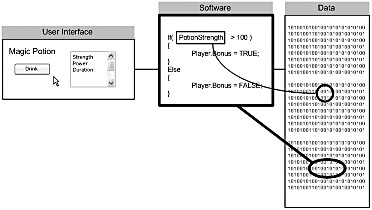
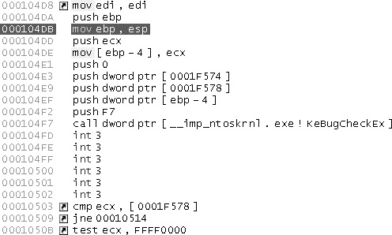
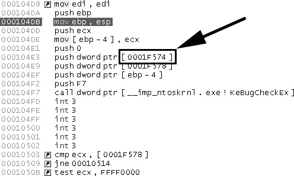
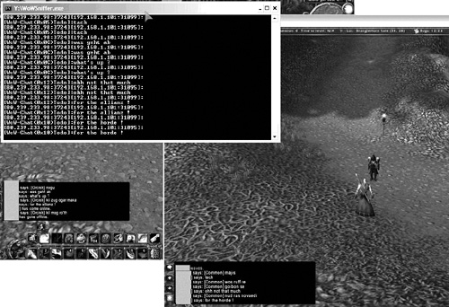
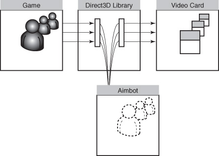

{% include JB/setup %}
{% raw %}
<div>
<a name="toppage" class="pcalibre calibre1"></a><table width="100%" border="0" cellspacing="0" cellpadding="0" class="sfbody"><tr valign="top" class="calibre2"><td class="calibre3"><a name="MainContent" class="pcalibre calibre1"></a><table width="95%" class="sfbody"><tr class="calibre2"><td class="pcalibre1 v"><!--Copyright (c) 2002 Safari Tech Books Online--><table width="100%" border="0" cellspacing="0" cellpadding="2" class="calibre4"><tr class="calibre2"><td valign="middle" class="v1 pcalibre1" height="5"></td></tr><tr class="calibre2"><td valign="middle" class="v1 pcalibre1"><table cellpadding="0" cellspacing="0" border="0" width="100%" class="calibre4"><tr class="calibre2"><td class="calibre6"><span class="calibre7"> </span>
                   
                  <span class="calibre7">   </span>
             <span class="calibre7"> </span></td></tr></table></td><td class="calibre8"/><td valign="middle" class="v2 pcalibre1"> 
           
          <span class="calibre7"><a target="_self" href="ch06lev1sec2.html" title="Previous section" class="pcalibre calibre1"></a></span>
				
				 
				
				<span class="calibre7"><a target="_self" href="ch06lev1sec4.html" title="Next section" class="pcalibre calibre1"></a></span></td></tr></table><div id="section" class="calibre15"><table width="100%" border="0" cellspacing="0" cellpadding="0" class="calibre4"><tr class="calibre2"><td valign="top" class="calibre8">Security Game Programming Networking Programming Greg Hoglund Gary McGraw Addison Wesley Professional Exploiting Online Games: Cheating Massively Distributed Systems<a name="ch06lev1sec3" class="pcalibre calibre1"></a>
<h3 id="title-IDAIPN1K" class="docSection1Title">Data, Data, Everywhere</h3>
<p class="docText">Now that we have some tools strapped on to our belts, let's turn to games. Two kinds of things can be altered in a software program—the code itself and the data that the code interacts with. (Just to complicate matters, the code itself is, of course, a form of stored data.) Ultimately, everything is just data—a sea of perfectly choreographed 1s and 0s. This insight has huge ramifications for the online game hacker.</p>
<p class="docText">Any data that are sent to a game client can be accessed or modified. Once data exist in the game client, they are yours for the taking (and yours for manipulating)—even data you're not supposed to see. For example, if the game client knows the location of a hidden secret potion, those data must exist in the game client <span class="docEmphasis">somewhere</span> even if the data are not apparent to you in the user interface. Making this even more fun, many times these game data can be manipulated and changed. For example, if the hidden magic potion is too far away, perhaps you can alter its location coordinates so that it conveniently ends up on the ground right in front of you!</p>
<p class="docText">Game clients display information to the game player through the user interface. However, the interface displays only part of the information that the client software possesses—the part that the player is supposed to see. <a name="iddle1697" class="pcalibre calibre1"></a>There is often plenty more information under the hood. <a class="pcalibre6 pcalibre5 calibre1" href="#ch06fig06">Figure 6-6</a> shows this relationship graphically. Assume that there is a magic potion, and that the potion has properties including strength, power, and duration. Under the hood, a software program is managing the magic potion. In our example, if the strength of the magic potion is greater than 100, you get an extra bonus. Refer to the figure for an example of how this software decision might look. When you click the <span class="docEmphasis">Drink</span> button, the potion's strength will be checked by the software and a bonus may be applied (but only if the condition is met).</p>
<a name="ch06fig06" class="pcalibre calibre1"></a><p class="calibre28"><center class="calibre29">
<h5 class="docFigureTitle">Figure 6-6. The user interface displays only part of what the client software knows. Sometimes you're supposed to see only pieces of what the software knows as part of the game. In this case, more information about the magic potion is available in the program than is ever displayed to the user. We can look at the software and the data to learn more.</h5>
</center></p><p class="docText">
</p>
<br class="calibre15"/>
<p class="docText">As we noted earlier, at the deepest layer of the game client, everything is just data. Even the software itself is stored as data. In <a class="pcalibre6 pcalibre5 calibre1" href="#ch06fig06">Figure 6-6</a>, the software that makes the potion decision is stored in one location, and the data that represent the potion's strength are stored in a different location. This is typically how it is—executable software bytes are stored in a special area away from the rest of the data. To complete our example and see how all of this matters, if you wanted to fool this game into giving you a bonus, you could go into memory and alter the data that control the potion's strength. If you set the potion strength data to a number greater than 100, then when the software executes (after you click the <span class="docEmphasis">Drink</span> button), it will give your character a bonus. You might do this with a fault injection engine or a debugger, or maybe just by poking a value into memory by hand.</p>
<p class="docText">This begs the question of how hard it really is to find out where the potion's strength is stored. This may sound a bit like a needle-in-a-haystack problem. There are in many cases millions of bytes of data in a single running program. Simply taking a stroll around in the data without a guide turns out to be not very useful. You need some kind of guide to show you what kind of data you're looking at, and even more specifically, how the data are used. Fortunately, a number of tools and techniques are at your disposal.</p>
<p class="docText">First, and most important, data get used. Data are either code or data operated on by code (and in some more complicated cases, both!). If the bits are code, they will be loaded into the CPU at some point and executed. Most disassemblers can find this code and mark it as code, and they'll subsequently show you the instructions that the code translates to in assembly language. <a class="pcalibre6 pcalibre5 calibre1" href="#ch06fig07">Figure 6-7</a> shows what assembly language looks like once binary has been through a disassembler.</p>
<a name="ch06fig07" class="pcalibre calibre1"></a><p class="calibre28"><center class="calibre29">
<h5 class="docFigureTitle">Figure 6-7. A disassembler takes binary code and creates assembly code that looks like this. The numbers in the left column are the memory locations where the machine code is located. The corresponding assembly language is in the right column.</h5>
</center></p><p class="docText">
</p>
<br class="calibre15"/>
<p class="docText">But what about normal data? If you have disassembled the code, the code can provide hints as to the location of data. <a class="pcalibre6 pcalibre5 calibre1" href="#ch06fig08">Figure 6-8</a> shows the code accessing a data location at <tt class="calibre38">0001F574</tt>. Because of the way the code is structured, we now know that memory location <tt class="calibre38">0001F574</tt> stores some kind of data. As it turns out, most code contains volumes of information like this to help us find data of interest.</p>
<p class="docText"></p><a name="ch06fig08" class="pcalibre calibre1"></a><p class="calibre28"><center class="calibre29">
<h5 class="docFigureTitle">Figure 6-8. Data are accessed by previously disassembled code, as shown here.</h5>
</center></p><p class="docText">
</p>
<br class="calibre15"/>
<a name="ch06lev2sec4" class="pcalibre calibre1"></a>
<h4 id="title-IDAAUN1K" class="docSection2Title">Data Exposure and Countermeasures</h4>
<p class="docText"><a name="iddle1021" class="pcalibre calibre1"></a><a name="iddle1347" class="pcalibre calibre1"></a><a name="iddle1371" class="pcalibre calibre1"></a><a name="iddle1372" class="pcalibre calibre1"></a><a name="iddle1373" class="pcalibre calibre1"></a><a name="iddle1374" class="pcalibre calibre1"></a><a name="iddle1376" class="pcalibre calibre1"></a><a name="iddle1377" class="pcalibre calibre1"></a><a name="iddle1596" class="pcalibre calibre1"></a><a name="iddle1806" class="pcalibre calibre1"></a>Obviously you can search for and alter data at will in any target game program. But remember that the game program can also search memory. The game may employ countermeasures that search for modifications made to its own code or data (e.g., through the use of integrity checking), and it can also scan for any injected code or data that you have placed into memory (using active malware scanning). Many of the techniques we show you involve altering code, tweaking data bits, and injecting threads or DLLs into the game process. All of this activity can and will be detected by some game software. The obvious example is Blizzard's Warden, which protects the WoW game (see <a class="pcalibre6 pcalibre5 calibre1" href="ch02.html#ch02">Chapter 2</a>). There are ways to hide from and defeat many, if not all, forms of scanning, but some of them can get quite complicated.</p>
<a name="ch06lev2sec5" class="pcalibre calibre1"></a>
<h4 id="title-IDAHXN1K" class="docSection2Title">Data at Rest, Data in Motion</h4>
<p class="docText">Sometimes data are at rest, say, in the memory of your computer. Sometimes data are in motion, say, as they whiz by on the network connection between two communicating programs. If you focus only on data in memory, you'll be missing out on half the fun. By modifying data in packets that are coming and going, you can deeply affect game play just as readily as you can when you change local instances of data in your computer's memory. In fact, if you know exactly how a given communication protocol works, you can <a name="iddle1362" class="pcalibre calibre1"></a><a name="iddle1451" class="pcalibre calibre1"></a><a name="iddle1453" class="pcalibre calibre1"></a><a name="iddle1907" class="pcalibre calibre1"></a><a name="iddle2324" class="pcalibre calibre1"></a>rewrite the game client with a stand-alone client of your own.<sup class="docFootnote"><a class="pcalibre6 pcalibre5 calibre1" href="#ch06fn02">[2]</a></sup> After all, what you really need is a program that takes in specific input and produces specific output.</p><blockquote class="calibre24"><p class="docFootnote1"><sup class="calibre31"><a name="ch06fn02" class="pcalibre calibre1">[2]</a></sup> This is an example of the attack pattern "Make the client invisible" from our book <span class="docEmphasis">Exploiting Software</span>. Much more on this can be found in <a class="pcalibre6 pcalibre5 calibre1" href="ch09.html#ch09">Chapter 9</a>.</p></blockquote>
<p class="docText">Let's make this concrete: Sometimes, by sniffing the right packets, you can determine the location of the secret potion without even using a debugger. <a class="pcalibre6 pcalibre5 calibre1" href="#ch06fig09">Figure 6-9</a> illustrates an example of such a sniffer. The program, called WoWSniffer, clearly illustrates the ability to sniff chat messages in transit over the network. This is especially interesting because the communications over the network are supposed to be encrypted. Apparently, the author of WoWSniffer has cracked the encryption.</p>
<a name="ch06fig09" class="pcalibre calibre1"></a><p class="calibre28"><center class="calibre29">
<h5 class="docFigureTitle">Figure 6-9. The WoWSniffer program is shown here running against World of Warcraft. The messages displayed in the sniffer window have lots of information about the inner workings of the game client. (From &lt;<a class="pcalibre6 pcalibre5 calibre1" target="_blank" href="http://www.firepacket.net">http://www.firepacket.net</a>&gt;; reproduced with permission.)</h5>
</center></p><p class="docText"><div class="v8 pcalibre3 pcalibre2"><a target="_blank" href="fig06-09_alt.jpg" class="pcalibre calibre20">[View full size image]</a></div></p>
<br class="calibre15"/>
<a name="ch06lev2sec6" class="pcalibre calibre1"></a>
<h4 id="title-IDAU0N1K" class="docSection2Title">Looking Elsewhere for Data</h4>
<p class="docText"><a name="iddle1017" class="pcalibre calibre1"></a><a name="iddle1018" class="pcalibre calibre1"></a><a name="iddle1043" class="pcalibre calibre1"></a><a name="iddle1378" class="pcalibre calibre1"></a><a name="iddle1400" class="pcalibre calibre1"></a><a name="iddle2123" class="pcalibre calibre1"></a><a name="iddle2226" class="pcalibre calibre1"></a><a name="iddle2227" class="pcalibre calibre1"></a><a name="iddle2229" class="pcalibre calibre1"></a>In <a class="pcalibre6 pcalibre5 calibre1" href="ch02.html#ch02">Chapter 2</a>, we introduce the idea of aimbots. Recall that aimbots can provide a player with uncanny, superhuman aim. Aimbots work by detecting the 3D coordinates of your enemy and calculating at exactly what angle to point your weapon to hit him or her with the best possible shot. Automatically pointing your sniper rifle into your opponent's left eye socket requires looking around in the data that store the 3D coordinates of objects being rendered in the game.</p>
<p class="docText">What makes aimbots particularly interesting is that they don't just look at data in the game program; instead, they take advantage of how data interact with the video card. The video card itself has a boatload of onboard RAM that stores data structures for rendering 3D objects. (Of course, gamers make a point of having the latest in graphics technology to play their games.) As it turns out, aimbots can take advantage of the 3D data stored in the video card to find the 3D coordinates of objects in the game world. How creative!</p>
<p class="docText"><a class="pcalibre6 pcalibre5 calibre1" href="#ch06fig10">Figure 6-10</a> shows how an aimbot can compute and maintain a carbon copy of all the objects being rendered in the video memory—even those objects not yet directly in the field of view. It does this by intercepting communications between the game and the Direct3D video library provided with Microsoft Windows.</p>
<a name="ch06fig10" class="pcalibre calibre1"></a><p class="calibre28"><center class="calibre29">
<h5 class="docFigureTitle">Figure 6-10. How an aimbot intercepts 3D coordinates as they are sent to the video subsystem in order to compute such things as enemy placement.</h5>
</center></p><p class="docText">
</p>
<br class="calibre15"/>
<ul class="calibre18"></ul></td></tr></table><table width="100%" border="0" cellspacing="0" cellpadding="2" class="calibre4"><tr class="calibre2"><td valign="middle" class="v1 pcalibre1" height="5"></td></tr><tr class="calibre2"><td valign="middle" class="v1 pcalibre1"><table cellpadding="0" cellspacing="0" border="0" width="100%" class="calibre4"><tr class="calibre2"><td class="calibre6"><span class="calibre7"> </span>
                   
                  <span class="calibre7">   </span>
             <span class="calibre7"> </span></td></tr></table></td><td class="calibre8"/><td valign="middle" class="v2 pcalibre1"> 
           
          <span class="calibre7"><a target="_self" href="ch06lev1sec2.html" title="Previous section" class="pcalibre calibre1"></a></span>
				
				 
				
				<span class="calibre7"><a target="_self" href="ch06lev1sec4.html" title="Next section" class="pcalibre calibre1"></a></span></td></tr></table><table width="100%" border="0" cellspacing="0" cellpadding="2" class="calibre4"><tr class="calibre2"><td valign="top" class="calibre14"><span class="calibre7"></span></td></tr></table></div><!--IP User 2--></td></tr></table></td><td class="calibre3">
                         
                      </td></tr><tr class="calibre2"><td colspan="3" valign="bottom" class="calibre3"><br class="calibre15"/><p class="v5 pcalibre1"></p><br class="calibre15"/></td></tr></table></div>

{% endraw %}

